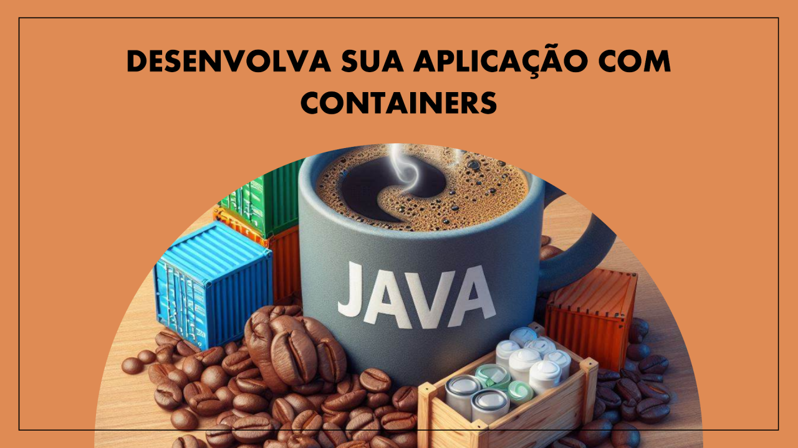
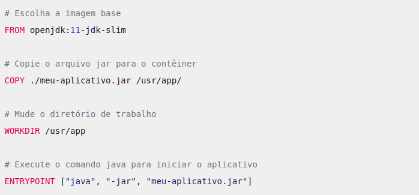
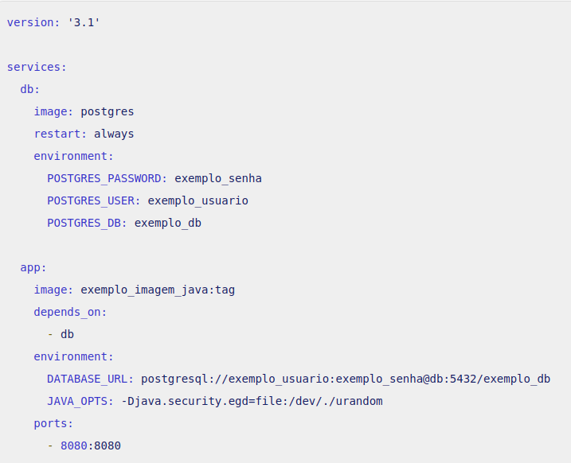

Desenvolvimento de aplicações Java com Containers
Containers no Desenvolvimento de Aplicações

Desenvolvedor Java Sênior na Develcode
30 de junho de 2024
Os containers têm se tornado uma parte essencial do desenvolvimento de aplicações modernas. Eles oferecem isolamento, portabilidade e escalabilidade, permitindo que as aplicações sejam executadas de maneira consistente em diferentes ambientes. Neste artigo, exploraremos os conceitos-chave relacionados a containers e como eles podem ser aplicados no contexto do desenvolvimento de software.
A ideia principal ao aplicar o desenvolvimento de aplicações utilizando containers é criar unidades isoladas que empacotam a aplicação e suas dependências em um único pacote. Esses containers oferecem portabilidade, escalabilidade e eficiência, permitindo que as aplicações sejam executadas consistentemente em diferentes ambientes. Isso simplifica a implantação e facilita o gerenciamento de recursos, tornando o desenvolvimento mais ágil e flexível.
O que são Containers?
Definição: Containers são unidades de software que empacotam uma aplicação e suas dependências em um único pacote.
Isolamento: Cada container executa em um ambiente isolado, garantindo que não haja conflitos com outras aplicações.
Eficiência: Os containers compartilham o mesmo kernel do sistema operacional, tornando-os mais leves que máquinas virtuais tradicionais.
Benefícios dos Containers
Portabilidade:
Os containers podem ser movidos facilmente entre diferentes hosts (servidores) e ambientes (desenvolvimento, teste, produção). Para os desenvolvedores Java é possível criar imagens de containers com suas aplicações e distribuí-las consistentemente.
Orquestração:
Ferramentas como o Kubernetes (k8s) permitem gerenciar clusters de containers. Para os desenvolvedores Java é possível definir implantações, escalabilidade e balanceamento de carga usando manifestos YAML.
Desenvolvimento Local:
Containers facilitam a configuração de ambientes de desenvolvimento consistentes.
Desenvolvedores Java podem usar Docker Compose para orquestrar vários containers localmente.
Exemplo Prático
Vamos começar com a instalação de uma ferramenta para a criação de containers, no caso aqui o Docker.
A maneira de encontrar o Docker para instalar no seu sistema operacional depende do sistema operacional que você está usando:
- Windows:
- Acesse o site oficial do Docker e clique em "Getting Started" para baixar o instalador do Docker Desktop.
- Execute o instalador baixado e siga as instruções de instalação.
- Ubuntu (Linux):
- Abra o terminal e execute os seguintes comandos:
sudo apt update
sudo apt install docker
- O Docker estará disponível após a instalação.
Para um exemplo prático, suponha que você esteja criando uma aplicação Spring Boot que se conecta a um banco de dados PostgreSQL. Aqui estão os passos:
Dockerfile:
Crie um arquivo chamado Dockerfile na raiz do seu projeto Java.

Exemplo de um dockerfile para um ambiente Java 11 OpenJDK
Este Dockerfile começa com a imagem base openjdk:11-jdk-slim, que é uma imagem Docker oficial do OpenJDK que inclui os seguintes ambientes Java na imagem padrão: o JRE (Java Runtime Environment) e o JDK (Java Development Kit).
Em seguida, copia o arquivo JAR do seu aplicativo (neste caso de exemplo o aquivo, meu-aplicativo.jar) para o contêiner.
O comando WORKDIR muda o diretório de trabalho para o local onde o arquivo JAR foi copiado.
Finalmente, o ENTRYPOINT especifica o comando que será executado quando o contêiner Docker for iniciado. Neste caso, ele inicia o aplicativo Java.
Lembre-se de substituir meu-aplicativo.jar pelo nome do seu arquivo JAR. E certifique-se de que o Dockerfile esteja no mesmo diretório do seu arquivo JAR quando você construir a imagem Docker.
Copie o arquivo JAR da sua aplicação para o container.
Defina o comando para executar a aplicação.
Build da Imagem:
Execute o comando docker build -t minha-aplicacao . para criar a imagem do container.
Docker Compose:
Crie um arquivo YAML docker-compose.yml.

Exemplo de um arquivo YAML docker-compose.yml
Neste exemplo, o serviço db é o banco de dados PostgreSQL e o serviço app é a aplicação Java. As variáveis de ambiente necessárias para a conexão com o banco de dados são definidas no serviço app.
Para o seu exemplo, substitua exemplo_senha, exemplo_usuario, exemplo_db, exemplo_imagem_java:tag pelos valores reais que você deseja usar.
Lembre-se de que você precisa construir sua imagem Docker para a aplicação Java e referenciá-la corretamente no serviço app (no campo image). A tag da imagem (neste exemplo, tag) deve corresponder à versão da sua aplicação.
Execução:
Execute docker-compose up para iniciar os containers.
Sua aplicação Java estará disponível em [http://localhost:8080]
Agora você tem uma aplicação Java empacotada em um container, com o banco de dados também em um container.
Isso facilita a configuração do ambiente local e a implantação consistente em outros ambientes.
Curiosidades
Os containers oferecem diversos benefícios no desenvolvimento de aplicações. Eles proporcionam isolamento, permitindo que cada aplicação execute em seu próprio ambiente sem conflitos. Além disso, os containers são portáteis, facilitando a implantação em diferentes ambientes e a migração entre servidores. Sua eficiência e escalabilidade também são vantagens, tornando-os ideais para ambientes de nuvem e orquestração, como o Kubernetes (K8s).
A orquestração de containers é o processo de automação de grande parte do esforço operacional para executar serviços e fluxos de trabalho organizados em containers. O Kubernetes, uma plataforma de código aberto, portável e extensível, é uma ferramenta popular para essa tarefa. Ele permite agrupar contêineres em unidades lógicas chamadas "pods", escalonando-os automaticamente com base na carga de trabalho ou substituindo-os se falharem. Além disso, o k8s oferece recursos como descoberta de serviço, balanceamento de carga, orquestração de armazenamento e gerenciamento de configurações e segredos, revolucionando a maneira como as aplicações são implantadas e mantidas.
Um pod do Kubernetes é um conjunto de um ou mais containers Linux, sendo a menor unidade de uma aplicação Kubernetes. Os pods são compostos por um container nos casos de uso mais comuns ou por vários containers fortemente acoplados em cenários mais avançados. Esses containers compartilham os mesmos recursos de computação, agrupados na forma de clusters, resultando em um sistema distribuído mais inteligente e eficiente para a execução de aplicações. Os pods permitem que os containers se comuniquem como se compartilhassem o mesmo hardware físico, enquanto mantêm um certo nível de isolamento. Essa organização é a base para funcionalidades como replicação e escalabilidade no Kubernetes.
Uma das implementações mais comuns para o uso de containers no desenvolvimento de aplicações é a implantação de micro-serviços. Nesse modelo, cada micro-serviço é empacotado em um container independente. Isso permite que os desenvolvedores criem, testem e implantem serviços de forma modular e escalável. Além disso, os containers facilitam a orquestração desses micro-serviços usando ferramentas como o Kubernetes (k8s), garantindo alta disponibilidade e flexibilidade.
Resumidamente, os containers são uma ferramenta poderosa para simplificar o desenvolvimento, implantação e escalabilidade de aplicações. No mundo do desenvolvimento Java podemos aproveitar esses benefícios para criar soluções mais eficientes e flexíveis.